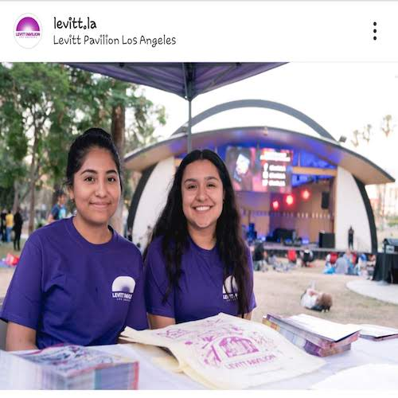
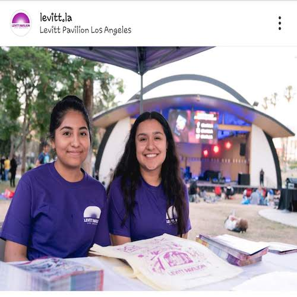
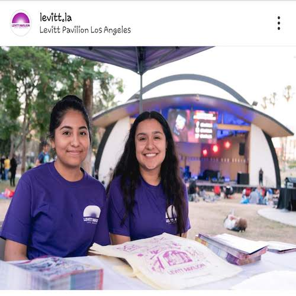

Neidy Barrios
Neidy Barrios is currently a second year student at the University of California, Riverside. She is majoring in Political Science because this is an important topic in today's world. She is a reliable and resourceful student with an aptitude to apply and develop the current skills of communication, social, and as a team player. She is looking in applying these skills at a law firm where she will be able to improve on these skill sets. She applied these set of skills in previously forms of interships such as interning at L.A. City Hall and for the L.A. County Department of Consumer and Business Affairs. Continuing working in similar environments has allowed her to grow as an individual and understand more about differen career options.
She previously interned at LA City Hall where she worked in Council Member Jose Huizar's office. There she applied the set of skills as a clerical assistant and communication skills. Her goal revolves around applying these set of skills to future career options that takes her to a law firm career of her choice. Therefore, she will strive in continuing her education in order to achieve her bachelors in Political Science, as well as going to law school to acquire her J.D. degree.
Neidy Barrios is not only interested in pursuing a Bachleors degree in Political Science, but aims at double-majoring in Education. As a young child, she enjoyed teaching to smaller kids. Therefore, her passion in educating can be applied through topics learned as a Political Science student. Furthermore, Neidy is a first-generation student who plans to dive into different career options and educating students about politics is something she strives in.
Experience
Intern as Consumer Counselor
• Answered 200 plus calls regarding consumer protection and landlord/tenant problems
• Called back constituents to follow up on their mediation case, as well as solving cases assigned.
Intern as Clerical Assistant
• Maintained office forms and procedures to assist with administrative tasks
• Successfully answered phone calls, organized files, and sorted mail’s
• Picked up signatures from the fifteenth district offices for resolutions.
Intern
• Worked and cooperated with several volunteers to set up chairs, tents, and tables in order to manage information and kids booth.
• Greeted and passed out pamphlets in order to attract guests into the events
Education
UC Riverside
Portfolio
 


